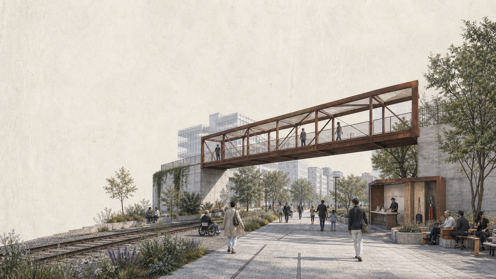
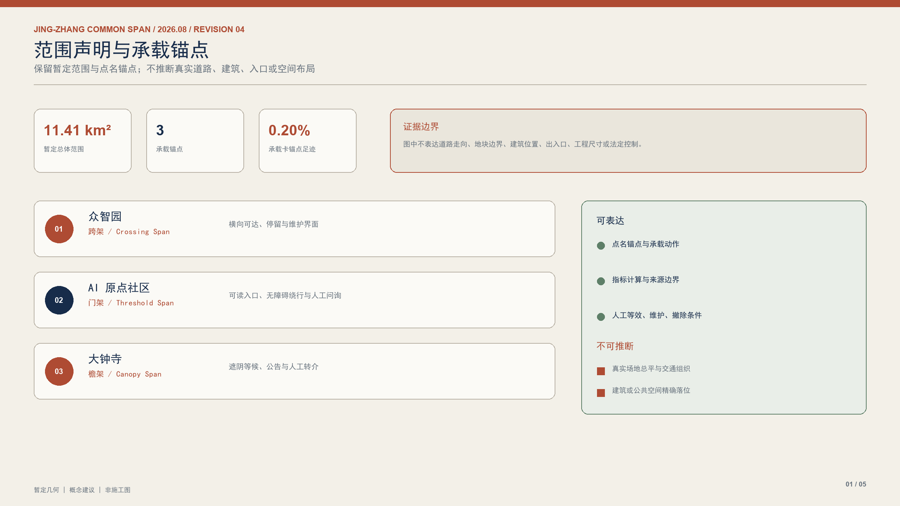
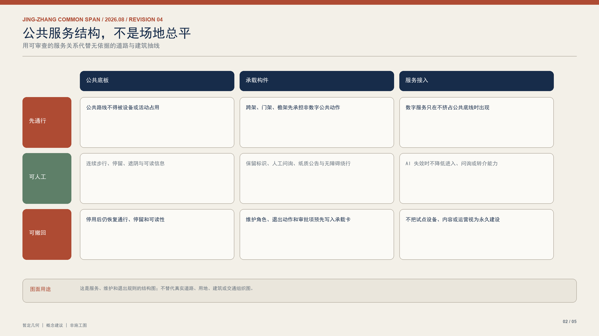
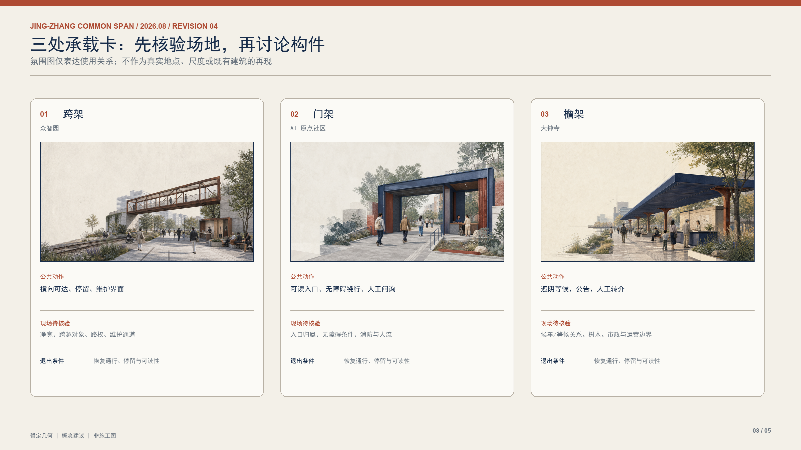
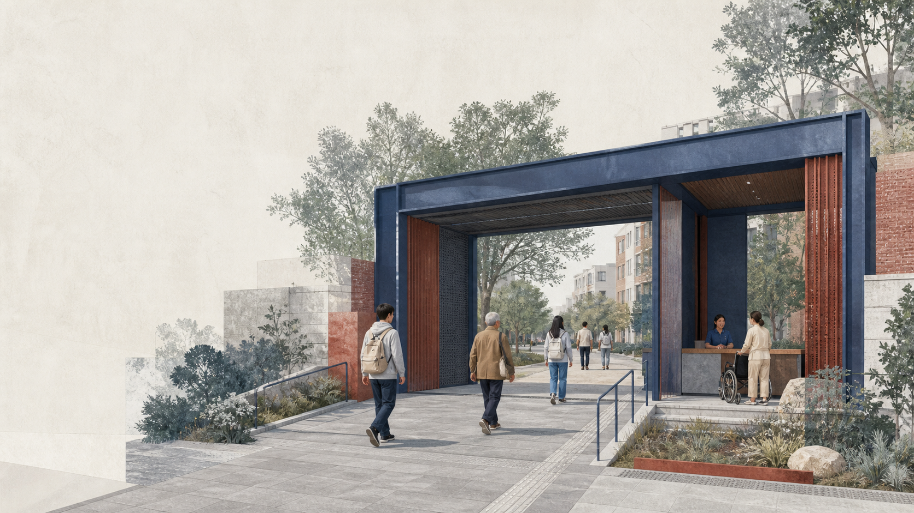
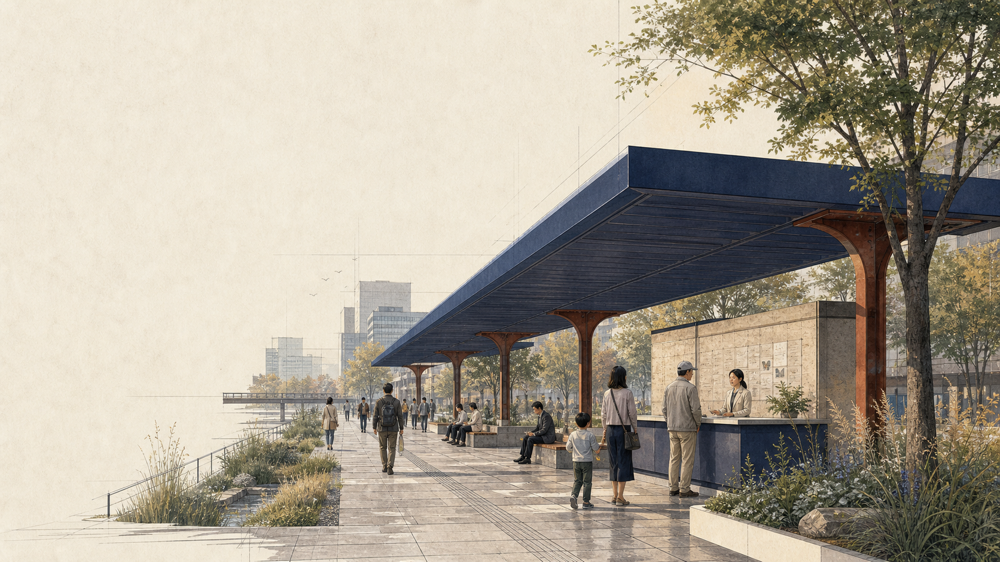
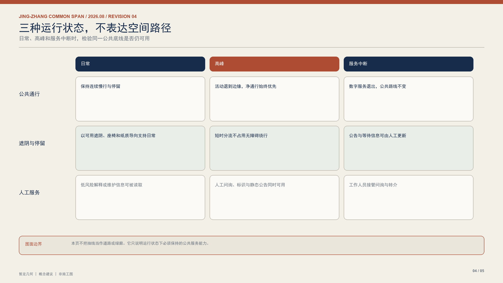
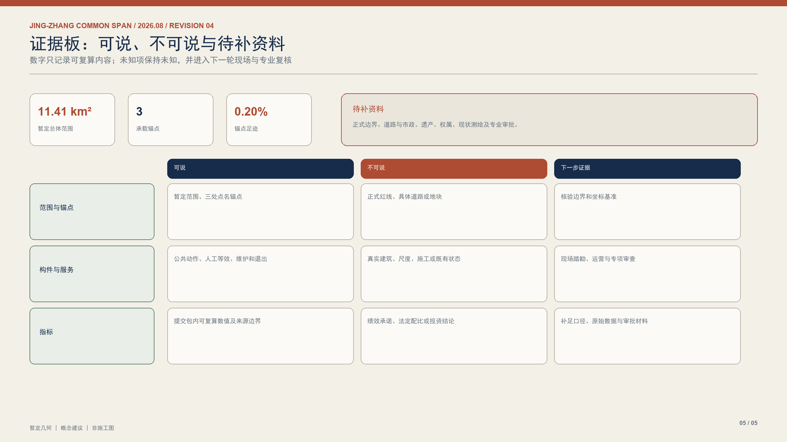

01 / 跨架｜众智园
概念场景仅表达横向可达、停留与维护界面；须核验净宽、跨越对象、路权与维护通道。
公共承载能力先于任何数字接入。图册不以无依据的抽线模拟道路、建筑或场地布局，而以范围声明、服务规则、承载卡、运行状态与证据边界组织方案。
暂定几何｜概念建议｜非施工图



概念场景仅表达横向可达、停留与维护界面；须核验净宽、跨越对象、路权与维护通道。

概念场景仅表达可读入口、无障碍绕行与人工问询；须核验入口归属、消防与人流。

概念场景仅表达遮阴等候、公告与人工转介；须核验等候关系、树木、市政与运营边界。


公开征集公告、智能体任务书、来源登记表、公开规划资料与提交包图层。
现有边界与重点区为暂定几何，仅用于范围声明、概念关系和可复算检查。
五张中英文图、双语静态页面、A3 图册和 A0 展板使用同一证据边界。